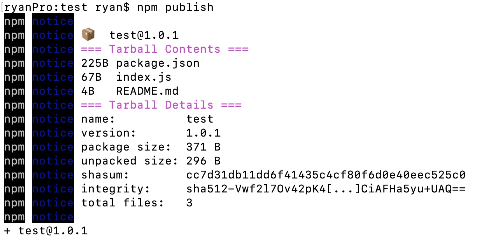

道枢组件库操作使用说明
组件库地址
http://10.168.4.143:4873
配置npm
npm set registry http://10.168.4.143:4873
登陆注册npm账号
npm adduser --registry http://10.168.4.143:4873
填写信息，注册账号。如果已经有账号，直接运行npm login即可。
注册信息如：
Username: test
Password: test
Email: (this IS public) youname@company.com
验证账户是否登陆成功
$ npm who am i
将会显示该用户名信息
发布npm包
进入该包目录下，运行
$ npm publish
如图: 
版本更新
npm version <update_type> -m "<message>"
其中update_type 有三种：
patch增加一位补丁号（比如 1.1.1 -> 1.1.2）
minor增加一位小版本号（比如 1.1.1 -> 1.2.0）
major增加一位大版本号（比如 1.1.1 -> 2.0.0）
比如：
npm version patch -m "Version %s - v1.0.2"
最后提交更新的版本：
npm publish
舍弃某个版本的模块
npm deprecate my-thing@"< 1.0.2" "critical bug fixed in v1.0.2"
撤销自己发布的版本。这只是一个测试的包，最好当然还是撤销下来
//删除要用force强制删除。超过24小时就不能删除了。自己把握好时间。
npm --force unpublish mti_npm强烈推荐使用nrm来管理自己的代理。
安装nrm:
全局安装nrm可以快速修改,切换,增加npm镜像地址。
$ npm install -g nrm # 安装nrm
$ nrm add XXXXX http://XXXXXX:4873 # 添加本地的npm镜像地址
$ nrm use XXXX # 使用本址的镜像地址
nrm的其他命令：
$ nrm --help # 查看nrm命令帮助
$ nrm list # 列出可用的 npm 镜像地址
$ nrm use taobao # 使用`淘宝npm`镜像地址
安装包
安装完成.之后你通过npm install 安装的包,sinopia都会帮你缓存到本地了.试一下吧。
mkdir test && cd test
npm install lodash # sinopia发现本地没有 lodash包,就会从 taobao镜像下载
rm -rf node-modules # 删除目录
npm insatll lodash # 第二次安装就会从缓存下载了,速度很快
创建用户与发布包
创建新用户
1.确保自己已经切换到配置的代理
nrm ls
npm ---- https://registry.npmjs.org/
cnpm --- http://r.cnpmjs.org/
taobao - http://registry.npm.taobao.org/
nj ----- https://registry.nodejitsu.com/
rednpm - http://registry.mirror.cqupt.edu.cn
npmMirror https://skimdb.npmjs.com/registry
* mtinpm http://10.168.4.143:4873/
2.运行npm adduser,填写信息，注册账号。如果已经有账号，直接运行npm login即可。
npm adduser --registry http://10.168.4.143:4873/
Username: test
Password:
3.运行$ npm publish发布新包。